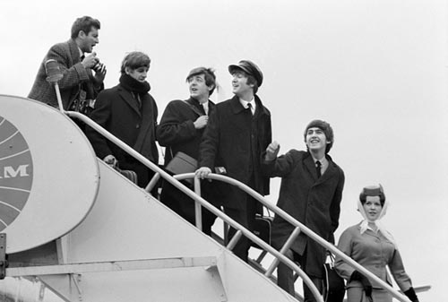
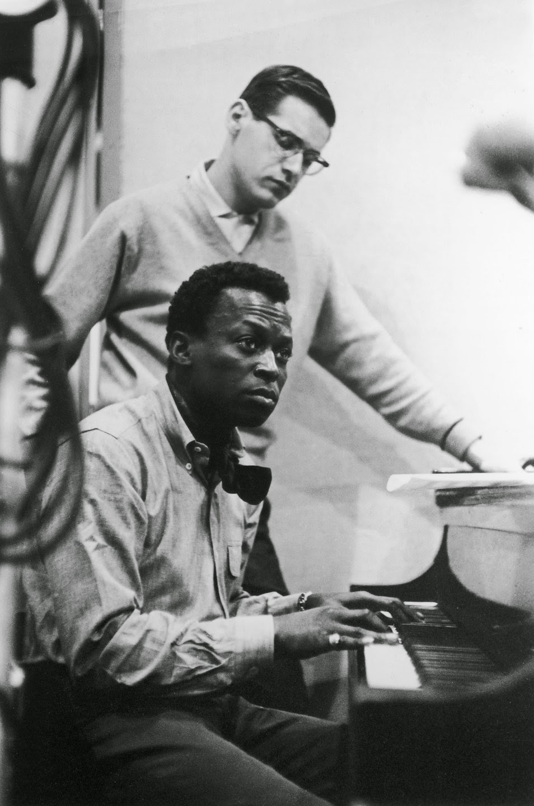
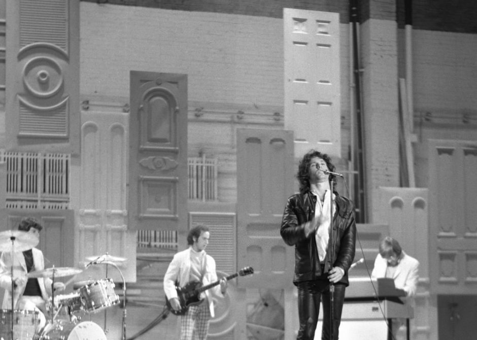
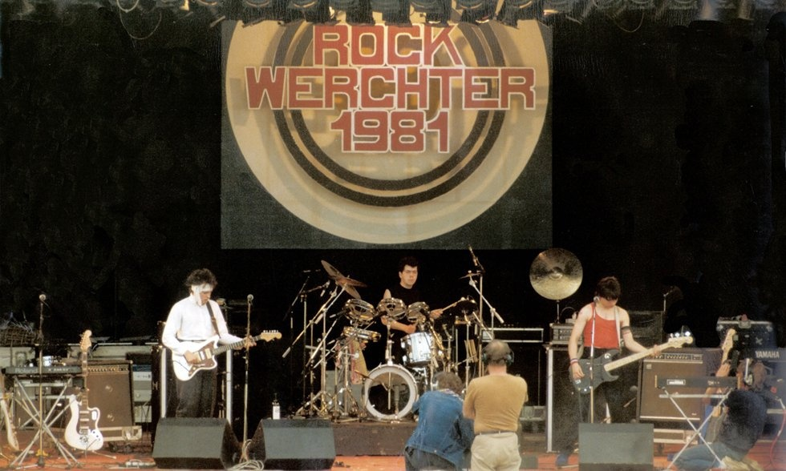
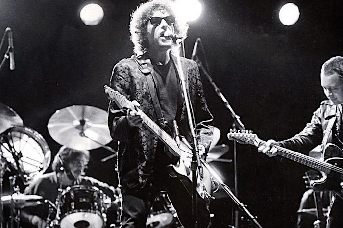

Music has always been important to me. Like anyone else, it's an escape from reality. Once I press play, I'm transported into another world. Listening allows me to paint colours, to create surrealistic images, to expand my mind.
I would say my love began when I was about 12 years old. I got a videogame, and was so invested into the long story. A big part of my interest was the accompanying soundtrack, varied with heavy rock, playful battle music, complex character themes. It impacted me so greatly, that I wanted to start playing various instruments to replicate and create my own sounds.
Usually my parents wouldn't spend a lot to get me gifts for birthdays, but when I told my mother that instead of wanting money, videogames or toys, I wanted a keyboard, she was delighted. Keyboards are a very versatile instrument. There are numerous sounds, notes, layering and computer modifiers you can use to help express the right sound. For example, I used a software that converts the notes I play on my keyboard to sound more richer and softer through a virtual instrument. Here's an excerpt of me playing:
It wasn't until I discovered Rolling Stone's '500 Greatest Albums of All Time', where I began to expand to more genres and popular music. I became influenced by top artists including:
-
The Beatles
Beatles arrive at JFK Airport, New York 7/02/1964 -
Miles Davis
Davis and Bill Evans during Kind of Blue sessions 1959 -
The Doors
The Doors performing at the Ed Sullivan Show 17/11/1967 -
The Cure
The Cure performing at Werchter Festival, Belgium 05/07/1981 -
Bob Dylan
Dylan performing at the 'Judas' show, Manchester 17/05/1966
Today, I generally listen to a wide variety of genres, and enjoy discovering new ones. This discovery mainly comes from friends with different tastes. They've given me an introduction to genres such as metal, folk, Indie and Irish rock. Personally, I usually gravitate towards soft sounding music. Genres like Shoegaze, dream pop and ambient music are my top genres.
In case you're wondering what shoegaze is:
Shoegazing is a style of alternative rock music that emerged from the British isles in the late 1980's and early 1990's. Characterized by overwhelmingly loud, distorted guitars and echoing reverb, the signature shoegaze sound deemphasizes the vocals, often treating the human voice as just another instrument in a wash of sonic texture. ... The term may also reflect the extensive use of guitar effects pedals, which often required looking down at the floor.
In a direct way, I really do appreciate listening to noise. Sometimes when places are too crowded and loud, or too quiet, I put on my earphones and listen to white noise. To me, it's relaxing and maximises my concentration.
My favourite album of all time is definitely Van Morrison's Astral weeks. The first time I listened to it, I immediately felt so immersed and moved. No other album has captured that same feeling. I loved it so much that I vowed to collect its vinyl, and after doing so started up my hobby collecting vinyls. I currently have 13 vinyl records. Each one is so special to me. Vinyls are very delicate. Before setting it up on a turntable, I brush out the dust and dirt through special tools like a microfibre cloth or a velvet brush. The turntable has to be well maintained too. It must sit at a straight sturdy table. If any bumps happen, it can scratch the vinyl being played. The needle must also be brushed, just to clear off dirt. I collect through various record stores, online, or at a merch stand at gigs.
My favourite gigs I've been to
| Artist | Genre | Date | Venue |
|---|---|---|---|
| Chinese Football | Math Rock | 21/08/2023 | The Grand Social, Dublin |
| Fazerdaze | Dream Pop | 09/11/2023 | King Tut's Wah Wah Hut, Glasgow |
| Pillow Queens | Indie Rock | 13/07/2024 | Iveagh Gardens, Dublin |
| Desire | Electronic | 21/05/2024 | Button Factory, Dublin |
| Black Country, New Road | Chamber Pop | 05/05/2023 | 3Olympia theatre, Dublin |
| Deafheaven | Black Metal | 23/08/2023 | Button Factory, Dublin |